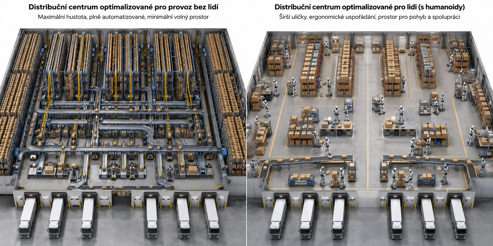

Cesta obyčejné zásilky vypadá jednoduše jen zvenku. Ve skutečnosti za ní stojí dopravní síť, automatizované stroje, měření, software i lidé, kteří musí celý systém navrhnout a bezpečně provozovat.
1. Zásilka necestuje sama
Jediné kliknutí v e-shopu spustí dlouhý řetězec rozhodnutí. Je potřeba naplánovat trasu, přidělit vozidlo, rozpoznat balík, přesměrovat jej na správný pás a předat informaci dalšímu místu.
Vedle fyzické zásilky proto putuje také její digitální popis: identifikátor, rozměry, hmotnost, cíl a historie pohybu.
2. Jedno centrum, mnoho oborů
Dopravník potřebuje pevnou konstrukci, vhodný motor a správný převod. Senzory musí balík spolehlivě najít a změřit. Program musí z měření rozhodnout, kam se má výhybka pohnout.
Každá vrstva může samostatně fungovat správně, a přesto může celek selhat. Senzor například měří přesně, ale na místě, kde přes něj balík projede příliš rychle.
3. Stroj se postupně stal systémem
Mechanické stroje nejprve získaly elektrický pohon, potom senzory a programovatelné řízení. Později se propojily s dalšími stroji a informačními systémy. Dnes lze z provozních dat hledat závady nebo upravovat plán výroby.
Staré znalosti tím nezmizely. Ani moderní algoritmus nezachrání špatně navržené ložisko nebo motor, který nemá dostatečný výkon.
4. Autonomní neznamená bez odpovědnosti
Autonomní rozvozové auto musí opakovaně měřit okolí, rozpoznávat objekty, plánovat bezpečný pohyb a ovládat skutečný stroj. Každé rozhodnutí závisí na kvalitě senzorů, programu i mechaniky.
Inženýr proto neřeší jen otázku „funguje to?“, ale také „jak bezpečně to selže?“ a „kdo pozná, že systému nelze věřit?“
Společná myšlenka: Moderní doprava ani výroba nejsou jeden stroj nebo jeden program. Jsou to propojené systémy, ve kterých se musí potkat mechanika, měření, řízení, software, data a odpovědnost lidí.
Dodatečné poznámky
Technický pokrok neurčuje jen to, co už umíme vymyslet. Stejně důležité je, co dokážeme spolehlivě postavit, vyzkoušet, zaplatit a zavést do skutečného provozu.
Poznámka 1 — Proč je praxe často pozadu
Od fungujícího nápadu k běžnému provozu vede dlouhá cesta. Návrh zařízení, výroba prototypu a hlavně testování automatizace stojí mnoho času, peněz a práce. U systému, který má řídit továrnu nebo dopravu, nestačí ukázat, že funguje jednou v laboratoři. Musí spolehlivě zvládnout tisíce běžných i nečekaných situací.
Mnoho principů automatizace proto známe dlouho, ale jejich zavedení se vyplatí až ve chvíli, kdy někdo získá dostatek zdrojů a důvod podstoupit změnu. Křivka šíření inovací ukazuje, že první pokusy malé skupiny inovátorů předcházejí přijetí většinou často o dlouhou dobu. Existující stroje, postupy a kvalifikace lidí vytvářejí obrovskou setrvačnost.
Hnací silou bývá až nutnost: tlak konkurence, nedostatek pracovníků, drahá nebo omezená energie, požadavek na vyšší bezpečnost či potřeba vyrábět přesněji.
Poznámka 2 — Automatizace a konkurenceschopnost
Automatizace není jen otázkou rychlejší výroby. Dobře navržený systém spotřebuje méně energie, omezuje chyby a šetří lidský čas pro práci, při které je potřeba úsudek, zkušenost nebo tvořivost. Podnik tak může vyrábět levněji, přesněji a ve stále stejné kvalitě.
Zavedení automatizace samo stojí peníze a musí dávat ekonomický smysl. Pokud však konkurence postupně snižuje náklady a zvyšuje výkon, podnik se zastaralými postupy jen obtížně udrží cenu i kvalitu. Kdo změnu dlouhodobě odkládá, může přestat být konkurenceschopný.

Poznámka 3 — Jsou budoucností humanoidní roboti?
Robot nemusí vypadat jako člověk, aby převzal namáhavou nebo opakující se práci. V distribučním centru bývá účinnější soustava specializovaných dopravníků, ramen a vozíků, protože každý stroj je navržen pro jediný úkol.
Humanoidní robot může být výhodný tam, kde má pracovat v prostředí vytvořeném pro lidské tělo: chodit po schodech, otevírat dveře nebo používat běžné nástroje. Složitější konstrukce však přináší vyšší cenu, spotřebu energie i více možností poruchy. Budoucnost proto pravděpodobně nebude patřit jednomu univerzálnímu tvaru, ale kombinaci různých strojů podle konkrétní práce.
Společná myšlenka: Automatizace není samoúčelná. Prosadí se tehdy, když spolehlivě šetří energii, lidský čas nebo náklady a pomáhá udržet konkurenceschopnost. Nejdůležitější proto není použít nejmodernější či člověku nejpodobnější stroj, ale zvolit řešení, které nejlépe odpovídá konkrétní práci.
1. Jak pošlete svou přihlášku?
Přihláška musí přežít cestu do přijímacího centra. Může být lehká jako list papíru, ale také vyrytá do kamene. Zvolené médium, výplň a obal určí rozměry, hmotnost i odolnost zásilky — a tato data vás budou provázet dalšími lekcemi.
📄 Médiumnese přihlášku
+
🫧 Ochranatlumí poškození
→
📦 Zásilkarozměry, hmotnost, odolnost
2. Sestavte svou zásilku
📄
Obsah s výplní
Povinná ochranná vrstva
Směs výplně
Stínicí fólie
Vnější rozměry zásilky
Objem zásilky
Celková hmotnost
nárazům
vodě
elmag. poli
teplu
Přihláška je připravena. Zkopírujte celý zápis a odešlete jej podle pokynů vyučujícího. Další změna formuláře vytvoří nový návrh.
Co si zkuste
Zvolte postupně malou, střední a velkou krabici. Jak se s povinnou tloušťkou ochrany mění rozměry a hmotnost obsahu?
Namíchejte zmačkaný papír a pěnovou výplň. Posouvejte jejich podíl po 5 % a sledujte, jak se mění hmotnost a odolnost.
Najděte nejlehčí kombinaci, která má odolnost proti nárazům alespoň 60 ze 100.
Vyzkoušejte magnetickou pásku a DVD se stínicí fólií a bez ní. Co fólie změní a které hodnoty zůstanou stejné?
3. Jak se vlastnosti počítají
Médium popisují tři rozměry w, h, d v milimetrech a hmotnost v gramech. Každý typ krabice vyžaduje ochrannou vrstvu p na každé straně; čím větší krabice, tím silnější vrstvu je potřeba použít. Vznikne obsah o rozměrech W = w + 2p, H = h + 2p a D = d + 2p. Nabídnou se jen obaly, do kterých se takto chráněný obsah vejde.
Posuvník neurčuje tloušťku, ale podíl dvou materiálů v povinné vrstvě. Výsledná hustota a ochranné vlastnosti jsou váženým průměrem obou podílů. Stínicí fólie je samostatná tenká vrstva: přidá ochranu proti elektromagnetickému poli a trochu hmotnosti, ale v tomto zjednodušeném modelu nezmění rozměry. Celková hmotnost je součtem média, směsi výplně, případné fólie a obalu.
Vlastnost
Co znamená hodnota 0
Co znamená hodnota 100
Odolnost nárazům
poškodí ji i slabý náraz
velmi odolná zásilka
Odolnost vodě
krátké namočení ji zničí
velmi dobře chráněna
Odolnost elmag. poli
citlivá na silné pole
pole obsah nepoškodí
Odolnost teplu
poškodí ji mírné zahřátí
snese vysokou teplotu
Například DVD má rozměry 120 × 120 × 1,2 mm. V malé krabici je povinná ochrana 10 mm na každé straně, takže chráněný obsah zabere 140 × 140 × 21,2 mm. Poměr materiálů ovlivní jeho hmotnost a odolnost, nikoli tyto rozměry. Výsledný objem zásilky se počítá z rozměrů celé krabice.
Proč je to těžké
Neexistuje jedna zásilka, která je nejlepší ve všem. Větší krabice vyžaduje silnější ochrannou vrstvu, a proto spolu s objemem roste také spotřeba materiálu a hmotnost. Směs lehkého a odolného materiálu může tento nárůst zmírnit, ale zlepšení jedné vlastnosti nemusí pomoci proti vodě, teplu nebo elektromagnetickému poli. Ani stínicí fólie neřeší všechny druhy poškození. Návrh je proto hledáním kompromisu mezi několika měřitelnými cíli.